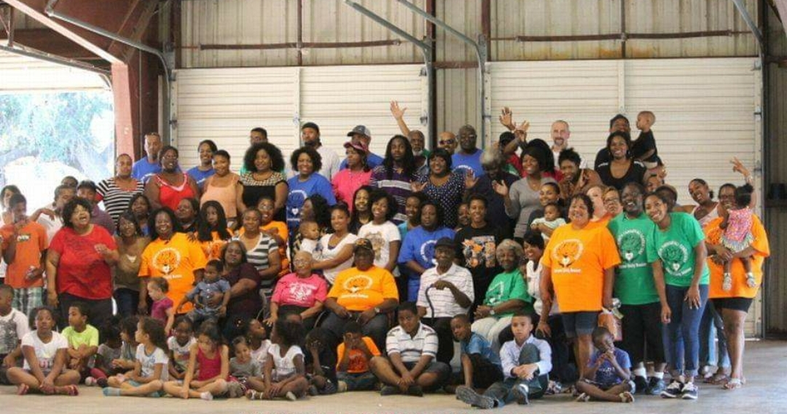
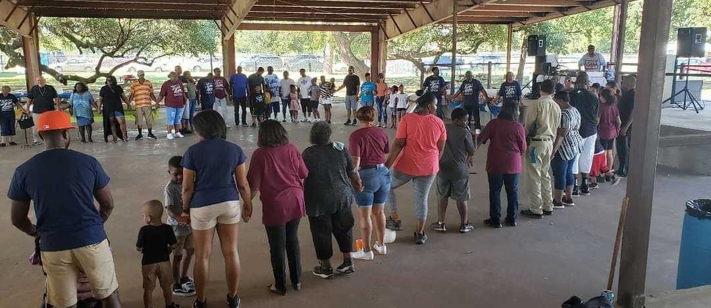

Reunion Costs: $30 Individual Tickets $50 Family Tickets
Date: October 19th, 2024
Start Time: 11:00 am CST
Food Serving: 1:00-3:00pm
Location: Smithville VFW 557 N W Loop 230, Smithville, TX 78957
This year's reunion continues the tradition of food and fun for the WHOLE family. Including competitive games for prizes like dominoes, spades and more.
We will have brisket, sausage, and chicken with delicious greens, chili beans, salads, and all types of handmade desserts from family members.
Showcase your skills and bring a side dish (if you can't cook, grab one of your favorite sides from the store and share it with us.
DJ Big Baby will be on the turntables once again, keeping the vibe right for dancing and overall musical enjoyment.
See you all there!
This year we are raffling off a new 50 inch Hisense Smart TV and a 12x12 metal Pavilion.
You can pre-purchase as many raffles tickets as you want through Tilda or buy them in-person at the reunion.
To Be Added